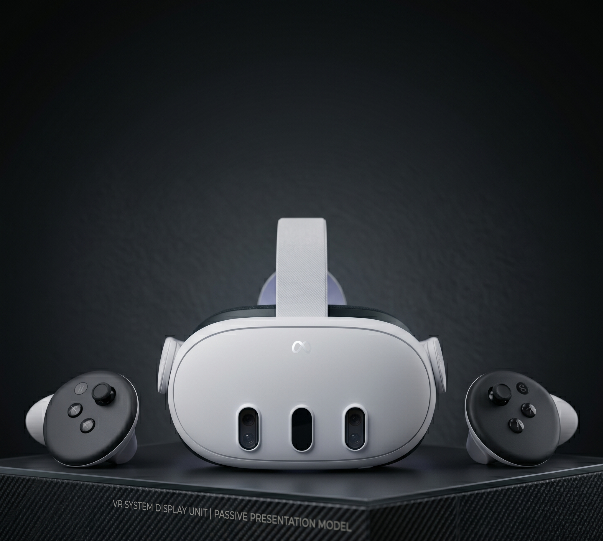

Meta Quest 3
Автономный VR-шлем с разрешением 2064 × 2208 на глаз, процессором Snapdragon XR2 Gen 2 и поддержкой смешанной реальности. Используется для погружения в виртуальные лаборатории и образовательные симуляции.
- Дисплей: 2064 × 2208 на глаз, 120 Гц
- Процессор: Snapdragon XR2 Gen 2
- Память: 128 ГБ
- Трекинг: 6DoF, без внешних датчиков